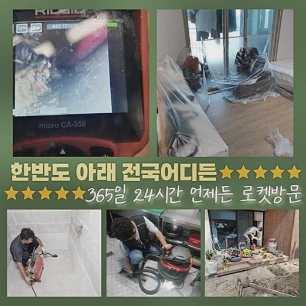
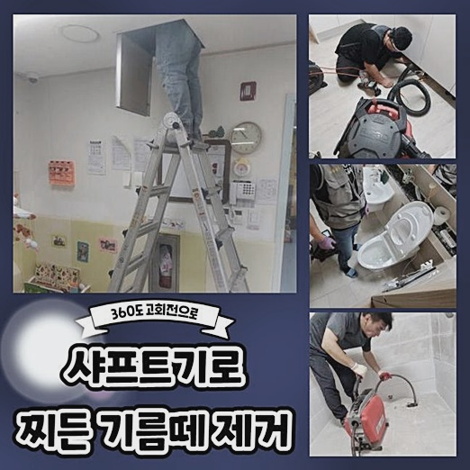
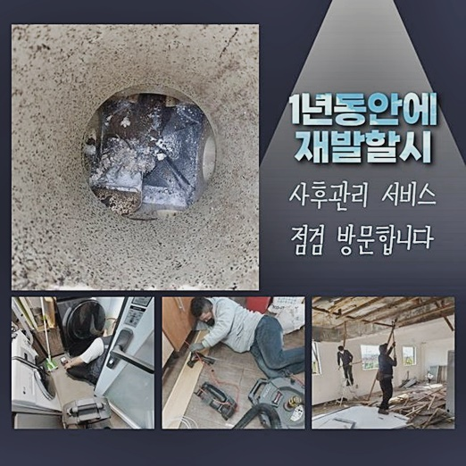
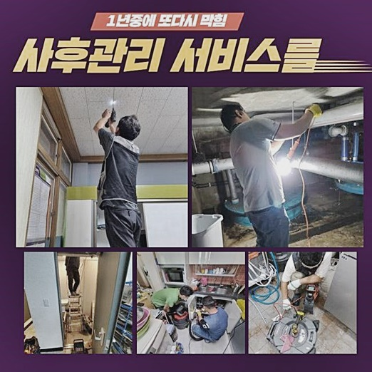
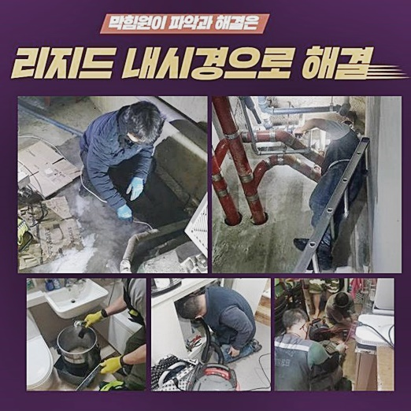
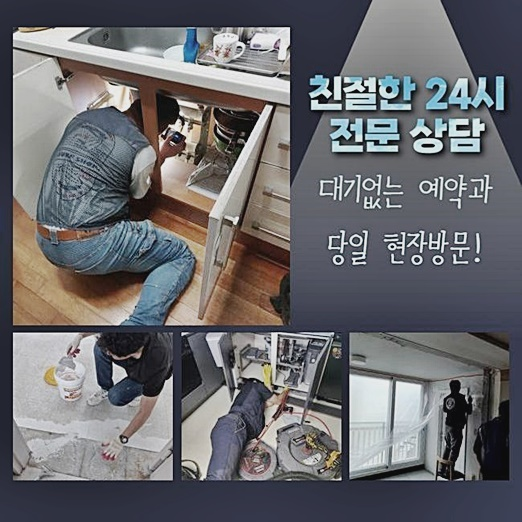

🏠 이천 단월동싱크대막힘 장호원읍 맨홀역류 해결방법
용인 싱크대막힘 전문 시공 후기

📋 작업 개요
- 위치: 용인
- 서비스 유형: 싱크대막힘, 하수구막힘, 배관막힘, 맨홀막힘, 역류해결, 뚫는업체, 배관청소, 고압세척, 설비공사, 배관보수
- 작업 일시: 2024. 10. 4. 10:16
- 업체명: 하수구수사대 (010-5615-2118)
🔍 문제 상황
이천 단월동싱크대막힘 장호원읍 맨홀역류 해결방법
주거지에서 자가수리등에 관한 진입장벽이 낮아져 발코니등에 보수를 해준다거나 욕실부분에 지저분한 눈금쪽에 작업들을 자가적으로 수행하시는 고객님들이 많아졌어요
이같은 행동으로 비용적인 측면을 축소해줄 수 있다면 다행이겠으나 가끔은 변수들로 예기치 못한 문제들이 발생될 수 있죠
공사자재등이 협소한 하수라인으로 빠지면 문제를 생기게하는데 시멘트들은 수돗물등과 맞닿으면 양생됨에 따라 배관을 막게됩니다
하지만 저희업체는 깨끗히 작업하니 언제든지 부담없이 맡기면 되겠습니다
방문드렸던 장소는 욕실에서 생겨난 증상으로 하단에 위치한 안쪽으로 오수들이 배출되지 못해 처리를 부탁하는 의뢰하셨습니다
전문적인 장치를 챙기고 고객님댁에 방문하고 배수구를 점검하였더니 초입에도 잔해물들이 잔존해 딱딱하게 고착되어 버린것을 목격했어요
의뢰하셨던 고객님은 얼마전 줄눈공사를 혼자서도 해보았는데 이상하게 하수도가 서서히 이상해졌다고 불편을 토로하셨어요

🔎 원인 분석
💡 전문가 진단: 정밀 진단 장비를 사용하여 슬러지의 고착 여부를 판명하고 타격/세척 작업을 실시했습니다.
구간별로 자리했던 잔재들을 심층부에까지 알게모르게 흘려보냈는데 진단 결과 겉에까지 이물질이 차오르게 된 기조가 시멘트인것으로 판단했는데요
심층부에까지 배관이 협소하여 흘러가지 못하고 솟구치는 문제까지 중첩되어 조속한 대처가 필요해보였죠
만일 기본적인 증상일때 양상이 심하지 않으면 흡입기로도 제거가 이루어지고 고착된 잔여물의 증상일때 샤프트기기 사용을 수행해요
이번 문제공간에서는 석회뭉치를 화학품으로 녹인뒤 제거를 시키는게 중요하기에 첫번째로 석회의 양들을 순차적으로 관찰하고 뒤이어 10분가량 기다려봤습니다
작업의 금액과 관련하여 궁금해해주시는 고객님들이 많겠으나 진단 결과에 따라 작업 시작점과 장비의 사용이 달라지기에 검수를 실시한 뒤 설명해드려요
혹시라도 돌처럼 흡착되었을 경우 조심성 없이 기기를 사용하면 하수관로가 파손될 가능성이 있고 간혹가다 물리적인 힘만으로 이물들을 사라지게 하려하다 배수관이 손상을 입는 때가 심심치않게 보여요
수도가 배출되지 못해 업체를 통해 문의를 하시는것이 아닌 용도에 맞지 않는 공구들로 무분별하게 뚫다가 하수관이 깨져서 의뢰를 하시기도 합니다
해당 방법은 막힌 배수구를 해결할 때 의외의 지출도 추가되는 탓에 원활히 해결되는 가능성도 있지만 반대로 힘든 상황을 마주하죠
저희전문진은 청소가 용이할 수 있게 중화제들을 구비하고 배관 전용 기기가 준비되어있기에 하수관에 손상이 없도록 안정성을 갖추어 진행해요

🔧 작업 과정
중화제들을 넣어주고 대기했다가 수도를 투입시키면 중화를 도와주어 부드럽게되죠
벽쪽에 붙으면서 돌과 같이 고착된 이물뭉치였지만 유화제로 녹인뒤 석션장치로 흡입시키니 잔해까지도 원활히 작업들이 되었어요
이와같이 석션기기로 흡입을 해주면 이후 단계인 샤프트세척을 원활하게 진행시킬 수 있죠
라인을 투입시켜서 엘보라인에 슬러지를 제거시키고 재차 라인을 체크했어요
1순위로 내시경 카메라를 하수도로 넣어서 하수관을 검수해 어느 부위를 신경써서 작업해줄것인지 보이는 것 말고도 특이사항은 없는건지 세심히 까닭들을 찾았습니다
내시경장치는 저희업체가 메인 배수관으로 흘러가는 중심에까지 투입되며 급커브 구간에도 길을 따라 진입되므로 원활하게 점검과 확인절차를 진행시켜드려요
초입과 수직배관 끝까지 이물이 잔존해있는 상황으로 샤프트기기로 전반적으로 세척을 해나갔어요
저희업체가 이용하고있는 샤프트장치는 사슬이 배관 내부에서 돌며 벽쪽에 달라붙은 잔해를 깨끗히 세척해주기에 각 라인이 잔해물로 막혀버렸을 때 꼭 있어야하는 녀석이죠
조각으로 나뉘어져 있거나 찐득한 잔재들만 있기보다는 개별배수관에서 돌과 같이 굳게되어 안에 자리하고 있으므로 탈락시켜주는 단계를 거쳐야해요
주기적으로 내시경장치를 투입시켜서 진단을 병행해 작업을 실시했죠
고착물들과 그외의 부유물들까지 제대로 청소해드리고 내시경기기로 확인을 해보니 엘보라인까지 청결해졌고 기름슬러지나 찌꺼기들고 없어졌답니다
초입에도 있었던 석회의 경우 시원히 깔끔히 청소됨으로 고객님은 편히 물을 이용하실 수 있게되었죠
끝으로 테스트까지 해보려고 물들을 담아 하수관으로 흐르게하여 배수와 작업이 원만히 진행되었나 체크해보았죠


✅ 작업 완료
역류해버리거나 바닥배관에서도 새는 증상들도 없었으며 내시경기기로 배수관을 확인하니 막히지않고 배출되었죠
재발확률을 낮추고자 관리적인 측면이 필요하다라는걸 기억해주세요
의뢰인분이 혼자서 올바른 수도사용을 유지하도록 관리법들도 안내하고 작업들을 종료했습니다
금액에 대한 궁금증도 전화 시 설명드리니 저희를 찾아주세요



⚠️ 주방 싱크대 배관 막힘 예방 수칙
- ✅ 기름기가 묻은 식기나 프라이팬은 설거지 전 키친타올로 반드시 기름때를 닦아내세요.
- ✅ 주기적으로 싱크대 개수대에 뜨거운 물을 가득 받아 한 번에 내려 배관 내부 기름을 씻어내세요.
- ✅ 배수구 거름망을 미세한 필터로 사용하시고 음식물 찌꺼기가 틈으로 새어 들지 않게 관리하세요.
- ✅ 베이킹소다와 식초를 뜨거운 물과 함께 일주일에 한 번씩 부어주면 배관 살균과 막힘 예방에 좋습니다.
💡 핵심 정리
- 확실한 장비 작업(내시경 점검 및 샤프트 스케일링)으로 원인을 뿌리 뽑습니다.
- 작업 후 1년 이내에 동일한 부위 재발 시 100% 무상 A/S 서비스를 보장합니다.
- 서울 · 경기 · 인천 전 지역에 24시간 언제든 긴급 출동할 수 있도록 항시 대기 중입니다.
❓ 자주 묻는 질문 (FAQ)
🚨 용인 싱크대막힘 문제로 고민이신가요?
정확한 원인 진단과 확실한 시공으로 재발 없는 해결을 약속드립니다.
24시간 긴급 출동 | 서울 · 경기 · 인천 전지역 | 1년 내 재발 시 무상 A/S